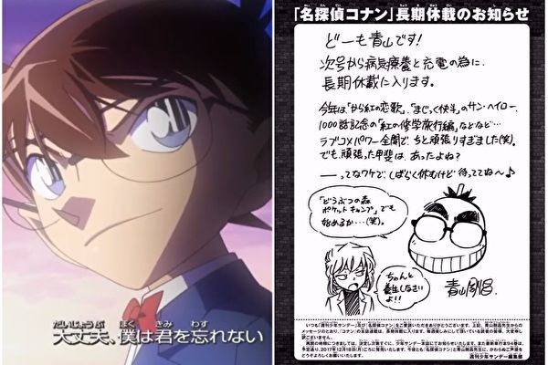

《名偵探柯南》將長期休刊！今（13）日發行的最新一期《週刊少年Sunday》中，作者青山剛昌表示為了養病，將長期休刊。由於該作近期已兩度休刊，這次發表長期休刊的消息也讓粉絲們感到憂心。
青山剛昌於《週刊少年Sunday》中發表消息：「大家好我是青山！下期開始，為了養病和充電將會長期休刊。今年畫了《唐紅的戀歌》、《神偷怪盜（魔術快斗）》的『太陽的光暈』以及1000話紀念作『紅的畢業旅行篇』等等……力氣全用在戀愛喜劇上，有點努力過頭了（笑）不過努力是值得的對吧？因此，會暫時休息一下，請大家稍等喔～」
此外，青山剛昌也畫了一張自畫像，並與《名偵探柯南》的知名角色「灰原哀」對話。插畫中青山笑著說道：「要不要開始玩『手機版動物之森』呢？」一旁的灰原哀則斜眼對著青山說道：「好好養病啦！！」
而《週刊少年Sunday》編輯部除了向該作粉絲們表示歉意，也感謝大家的支持，並表示確定復刊時會再公告，而最新的第94集單行本仍會如期於12月18日發行，希望大家繼續支持《名偵探柯南》及作者青山剛昌。
由於青山剛昌曾於2015年因病進行手術而住院，當時青山也曾寫下親筆通知，向粉絲們表示「手術平安結束，但因為必須住院，期間無法定期連載，但出院了就會回來，請大家稍等喔（笑）。」而網路也流傳青山罹患「椎間盤突出」、「胰臟相關疾病」等說法，因此本次宣布長期休刊，再度引發粉絲擔憂。
而該作粉絲也陸續於網路留言：「老師啊，拜託你一定要沒事，5年我也會等的，要照顧身體別胡來啊。」對於休刊前的連載內容已推理出幕後黑手，也有粉絲擔憂：「該不會因為身體狀況不好，所以才急著畫出幕後黑手吧？」更多粉絲表示：「真的希望作者早日康復啊！」